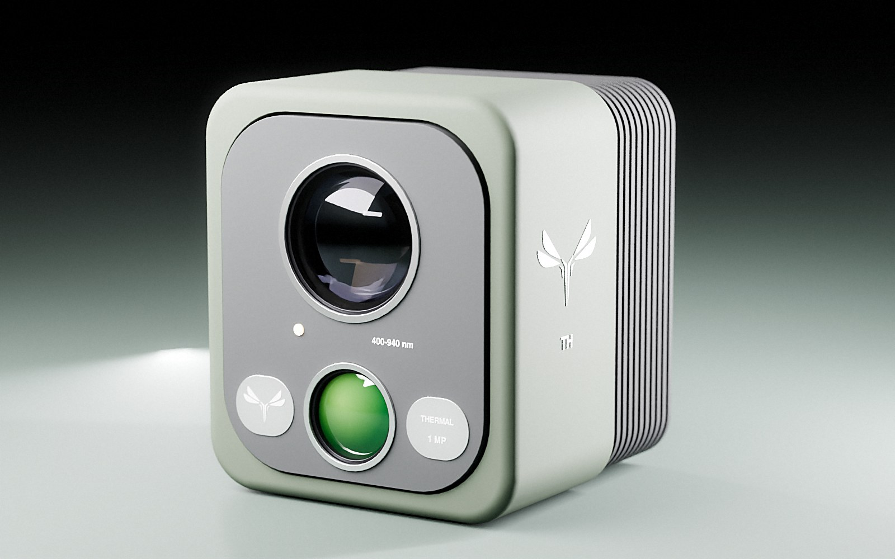

TEARDOWN
Four layers, one core.
Scroll to take it apart. Core choice is a placeholder until a supplier is picked.
Two modules behind one faceplate: a Mira220 NIR camera seeing 400 to 940 nm through a large clear lens, and a 1 MP thermal core behind a germanium lens below it. Built for solar arrays, substations and electrical rooms.
Scroll to take it apart. Core choice is a placeholder until a supplier is picked.
A germanium lens for long-wave infrared (the green glint is its coating), and an M12 lens with a 400–940 nm filter for the Mira220. Both are focused and locked for flight.
The thermal module is a sealed 1 MP VOx core with its own lens mount and germanium window. The NIR module is a Mira220 board: global shutter and enhanced near-infrared sensitivity, so one channel covers visible through 940 nm.
Triggers both modules together, turns thermal counts into temperatures, registers the NIR frame onto the thermal one, and streams both over Ethernet with flight time and position.
A field-sage housing with one dark faceplate, fixed from inside so no screws show: both lenses sit flush behind polished bezels, with a label plate by the thermal lens. A black finned aluminium shell behind sheds the core's heat.
See what it finds on a solar farm.
See it fly →Thermal finds the hot cell; the NIR frame shows exactly which module it is on.
